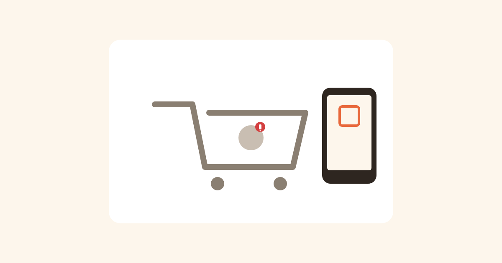

Dvije godine s lješnjakom — zašto sam napravio imamAlergiju
11. august 2026.

Sjećam se tog dana kao da je bio juče. Sve je krenulo iznenada — ništa u porodici nije nagovještavalo da ćemo se naći u čekaonici, uplašeni, tražeći odgovore. Dijete koje je do tada jelo šta i mi, odjednom je reagovalo na nešto sitno, gotovo nevidljivo u hrani. Lješnjak.
Prvi dani su bili haos. Doktori, alergološki testovi, papiri, upozorenja, liste namirnica koje treba izbjegavati. Sve se dešavalo brzo, a mi smo pokušavali da uhvatimo korak. Priznajem — u sebi sam se tješio da će to proći. Da je to nešto što djeca "prerastu", da ćemo se za par mjeseci vratiti starom životu bez čitanja svake deklaracije po deset puta prije nego što nešto stavimo u korpu.
Prošlo je dvije godine. Lješnjak je i dalje tu. I dalje je dio našeg svakodnevnog života — svaki put kad uđemo u prodavnicu, svaki put kad neko pokloni čokoladu, svaki rođendan, svako putovanje. Naučili smo da čitamo deklaracije unatrag i unaprijed, da tražimo riječi kao "može sadržati tragove oraha", da smo sumnjičavi prema svemu što piše "biljna mast" ili "aroma" bez dodatnog objašnjenja.
Kako je nastala imamAlergiju
U jednom trenutku, stojeći u prodavnici sa punom korpom i telefonom u ruci, pokušavajući po ko zna koji put da provjerim sastav nečega preko neke aplikacije koja mi je tražila registraciju, pa login, pa reklame, pa deset minuta listanja kroz jelovnike i recepte da bih na kraju našao (ili ne našao) ono što me zanima — samo jedno pitanje: ima li ovo lješnjak — shvatio sam da postoji prostor za nešto mnogo jednostavnije.
Ne treba mi aplikacija koja radi sve. Treba mi aplikacija koja radi jednu stvar, brzo i jasno. Skeniraš barkod, telefon ti za dvije sekunde kaže: zeleno, narandžasto ili crveno. Bez naloga, bez čekanja, bez reklama, bez nepotrebnih koraka.
Tako je nastala imamAlergiju. Besplatna je, jednostavna, i pravljena za naš region — na našem jeziku, prilagođena onome kako mi ovdje kupujemo i čitamo deklaracije, za razliku od velikih stranih aplikacija koje su često nepregledne i komplikovane za nešto što bi trebalo biti brzo.
Aplikacija koristi besplatne, javne izvore podataka (OpenFoodFacts) — istu bazu koju puni cijela svjetska zajednica roditelja, kuvara i običnih ljudi poput nas. To znači da je besplatna i da će ostati besplatna, ali i da nije 100% pouzdana. Baza raste i popravlja se svaki dan, ali greške su moguće — neko je mogao pogrešno unijeti podatak, ili proizvod jednostavno još nije unesen.
Molim vas za oprez
Ovo je alat koji pomaže, ne zamjena za vaše oči i vaš zdrav razum. Uvijek dvaput provjerite deklaraciju na proizvodu, pogotovo kad je u pitanju alergija koja može biti opasna. Zeleno na semaforu znači "nismo našli ovaj alergen u dostupnim podacima" — ne znači "garantovano sigurno".
Ako primijetite da je neki proizvod pogrešno označen — da kaže da je siguran a vi znate da nije, ili obrnuto — aplikacija vam omogućava da to odmah ispravite direktno unutar nje, u par klikova. Time pomažete i sebi i svakom sledećem roditelju koji skenira isti proizvod. Ova baza je onoliko dobra koliko mi svi zajedno uložimo u nju.
Dvije godine sa lješnjakom su me naučile mnogo toga — strpljenju, opreznosti, i tome da male stvari (kao dvije sekunde skeniranja u prodavnici) mogu roditeljima uštedjeti ogromnu količinu stresa. Nadam se da će vam imamAlergiju značiti isto što i nama.